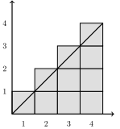

HW 8
ENGR 21, Fall 2026.
| Due Date | Fri, Nov 07 |
| Turn in link | Gradescope PDF and Code |
| URL | emadmasroor.github.io/E21-F26/Homework/HW8 |
What to turn in
Combine all written HW into one PDF file.
| Problem | Format |
|---|---|
| 1 | |
| 2 | Python function named gaussian_elimination |
| 3 | Python function named LUdecomp |
| 4.1 | Python function named backward_substitution |
| 4.2 | Python function named forward_substitution |
| 5.1 | |
| 5.2 | Python code |
1 Counting Calculations
1.1 Quantifying the computational cost of LU Decomposition
The \(LU\) decomposition of a matrix of size \(4 \times 4\) requires us to perform six row updates of the kind ‘row x = row x - (multiplier) times row y’, as you did in the worksheet in Lecture 16.
In each calculation, an entire row is updated, although some elements of that row may already be known to be zero.
1.1.1 Number of Row Updates
How many row updates are needed for the \(LU\) decomposition of a matrix of size \(n \times n\) ? Give your answer as a simplified formula in terms of \(n\).
The sum of all numbers from 1 to \(n\) can be calculated by finding the shaded area in the diagram below.

Use this fact to help you derive the needed formula. Then, write down how many row updates are needed for a matrix of size \(5 \times 5\), \(10 \times 10\), \(100 \times 100\), and \(10^{6} \times 10^6\).
1.1.2 Number of nonzero terms updated
Looking more closely at the LU Decomposition process from the in-class worksheet, we can see that each time a row update is carried out, the computer needs to calculate several new terms at once.
For example, in the first row update to eliminate \(A_{21}\), we write:
Let \(\text{row 2} = \text{row 2} - \left({A_{21}}/{A_{11}}\right) \times \text{ row 1}.\)
This is one row update, which carries out several term updates. Let’s write them out:
\(\left[ \underbrace{A_{21} - \frac{A_{21}}{A_{11}} \times A_{11}}_{\text{new value of }A_{21} = 0}, \quad \underbrace{A_{22} - \frac{A_{21}}{A_{11}} \times A_{12}}_{\text{new value of }A_{22} \neq 0}, \quad \underbrace{A_{23} - \frac{A_{21}}{A_{11}} \times A_{13}}_{\text{new value of }A_{23} \neq 0}, \quad \underbrace{A_{24} - \frac{A_{21}}{A_{11}} \times A_{14}}_{\text{new value of }A_{24}\neq 0} \right]\)
We therefore see that the first row update for a 4x4 matrix requires us to update up to 3 terms, ignoring the one that will turn out to be zero by construction.
As a second example, let us look at the 4th row update. This time, we have
Let \(\text{row 3} = \text{row 3} - \left({A_{32}}/{A_{22}}\right) \times \text{ row 2}.\)
\(\left[ \underbrace{\overbrace{A_{31}}^{=0} - \frac{A_{32}}{A_{22}} \times \overbrace{A_{21}}^{=0}}_{\text{new value of }A_{31}=0}, \quad \underbrace{A_{32} - \frac{A_{32}}{A_{22}} \times A_{22}}_{\text{new value of }A_{32} = 0}, \quad \underbrace{A_{33} - \frac{A_{32}}{A_{22}} \times A_{23}}_{\text{new value of }A_{33} \neq 0}, \quad \underbrace{A_{34} - \frac{A_{32}}{A_{22}} \times A_{24}}_{\text{new value of }A_{34}\neq 0} \right]\)
Systematizing this procedure of counting, we can summarize the LU Decomposition / Gaussian Elimination of a matrix of size \(n \times n\) as follows.
| Step no. | Row | Terms Updated (\(\cancel{x} \implies x = 0\)) | No. of nonzero terms | |
|---|---|---|---|---|
| 1 | Row 2 | \(\cancel{A_{21}}\), \(A_{22}\), \(A_{23}\), \(A_{24}\) | 3 | |
| 2 | Row 3 | \(\cancel{A_{31}}\), \(A_{32}\), \(A_{33}\), \(A_{34}\) | 3 | |
| 3 | Row 4 | \(\cancel{A_{41}}\), \(A_{42}\), \(A_{43}\), \(A_{44}\) | 3 | |
| 4 | Row 3 | \(\cancel{A_{31}}\), \(\cancel{A_{32}}\), \(A_{33}\), \(A_{34}\) | 2 | |
| 5 | Row 4 | \(\cancel{A_{41}}\), \(\cancel{A_{42}}\), \(A_{43}\), \(A_{44}\) | 2 | |
| 6 | Row 4 | \(\cancel{A_{41}}\), \(\cancel{A_{42}}\), \(\cancel{A_{43}}\), \(A_{44}\) | 1 | |
| Total | 14 |
We can use this table to calculate the number of nonzero terms that are updated to Gauss-eliminate a square matrix of size \(4 \times 4\):
\[ \begin{align*} 3 + 3 + 3 &+ \\ 2 + 2 &+ \\ 1 &= 14 \end{align*} \]
Using summation notation (i.e., the symbol \(\sum\)), determine a formula for the number of nonzero terms that are updated when Gauss-eliminating a matrix of size \(n \times n\), in terms of \(n\). Write down how many nonzero term updates are needed for a matrix of size \(5 \times 5\), \(10 \times 10\), \(100 \times 100\), and \(10^{6} \times 10^6\).
1.1.3 Tridiagonal Matrices and Tridiagonal solvers
When a matrix is banded, a specialized solver exploits this banded structure to dramatically reduce the number of calculations needed to perform \(LU\) decomposition on it.
- In terms of \(n\), how many nonzero terms need to be updated when performing \(LU\) decomposition of a tridiagonal matrix of size \(n \times n\) ?
- A square matrix has size \(n\), and one engineer \(LU\)-decomposes it using an algorithm that does not take advantage of the banded structure, while a second engineer uses a specialized algorithm that only updates the necessary terms. Determine the ratio of the number of term updates carried out by the second engineer’s algorithm compared to the first engineer’s algorithm. The answer to Section 1.1.2 will provide the denominator of this fraction.
- In terms of \(n\), what is the maximum number of nonzero terms in a tridiagonal matrix?
- Assume that one byte of memory is used to store one entry in a matrix. What is the percentage saving in space when only the three bands of a tridiagonal \(n \times n\) matrix are stored, instead of the full matrix? Give your answer in terms of \(n\).
- Calculate the fraction from 2 and 4 above, for a matrix of size \(5 \times 5\), \(10 \times 10\), \(100 \times 100\), and \(10^{6} \times 10^6\). Write the answers as decimal numbers using scientific notation when necessary.
2 Gaussian Elimination
Write a Python function named gaussian_elimination that takes as input a 2-dimensional numpy array. This array need not represent a square matrix; in practice, we can use such a function for both square matrices \(A\), which have size \(N \times N\), and ‘augmented matrices’ \(\left[ A | b \right]\), which have size \(N \times (N+1)\).
Your function should return the row-echelon form of the given matrix, as a numpy array having the same dimensions as the input array. You do not need to account for cases where \(Ax=b\) has no solution.
3 LU Decomposition
Write a Python function named LUdecomp that takes as input a square matrix A and outputs two square matrices in a tuple, such as (L,U). The first element of the tuple should contain a lower triangular matrix, and the second element of the tuple should contain an upper triangular matrix, determined uniquely by Doolittle’s Method.
You can re-use the code from Section 2 by calling gaussian_elimination from inside LUdecomp. If you choose to do so, make sure that the graders will be able to run your code.
4 Solution Phase — forward and backward substitutions
4.1 Backward substitution
The idea behind backward substitution is that an equation of the form \(Ax=c\) where \(A\) is an upper triangular matrix can be solved (for the vector \(x\)) by starting from the last row and working backward.
Write a function named backward_substitution that takes as input a matrix (i.e., 2-dimensional numpy array) of size \(N \times (N+1)\) and outputs a 1-dimensional numpy array of size \(N\). The input should be assumed to have the form
\[ \left[\begin{array}{ccc|c} A_{11} & A_{12} & A_{13} & c_1 \\ 0 & A_{22} & A_{23} & c_2 \\ 0 & 0 & A_{33} & c_3 \end{array}\right] \]
and the output should be a solution to the system of equations
\[ \begin{aligned} A_{11} x_1 + A_{12} x_2 + A_{13} x_3 &= c_1 \\ \phantom{A_{21}x_1 +} A_{22}x_2 + A_{23}x_3 &= c_2 \\ \phantom{A_{31}x_1 + A_{32}x_2 +} A_{33} x_3 &= c_3 \\ \end{aligned} \]
Note that a formula for this has been given in lecture.
A partial annotated solution is provided below.
- 1
-
Extract the last column of
acand designate it asc, the right-hand-side vector. - 2
-
Designate the first
ncolumns ofacas the system matrix \(A\). - 3
- Start from the last index and work backward toward zero.
- 4
- Initialize a variable that will contain the sum \(\displaystyle \sum_{k=i+1}^n \left[A_{ik} x_k \right]\)
- 5
- Fix this line
- 6
- Assemble the sum
4.2 Forward Substitution
The idea behind forward substitution is that an equation of the form \(Ax=c\) where \(A\) is a lower triangular matrix can be solved (for the vector \(x\)) by starting from the first row and working forward.
Write a function named forward_substitution that takes as input a matrix (i.e., 2-dimensional numpy array) of size \(N \times (N+1)\) and outputs a 1-dimensional numpy array of size \(N\). The input should be assumed to have the form
\[ \left[\begin{array}{ccc|c} A_{11} & 0 & 0 & c_1\\ A_{21} & A_{22} & 0 & c_2\\ A_{31} & A_{32} & A_{33} & c_3 \end{array}\right] \]
and the output should be a solution to the system of equations
\[ \begin{aligned} A_{11} x_1 \phantom{ + A_{12} x_2 + A_{13} x_3} &= c_1 \\ A_{21} x_1 + A_{22} x_2 \phantom{ + A_{23} x_3 } &= c_2 \\ A_{31} x_1 + A_{32} x_2 + A_{33} x_3 &= c_2 \\ \end{aligned} \]
5 Solving Systems of Linear Equations
5.1 LU Decomposition of a 3x3 matrix
A certain square matrix \(A\) can be decomposed using Doolittle’s Decomposition into a product \(LU\) of the following matrices,
\[ L = \begin{bmatrix} 1 & 0 & 0 \\ 3/2 & 1 & 0 \\ 1/2 & 11/13 & 1 \end{bmatrix}, \quad U = \begin{bmatrix} 2 & -3 & -1\\ 0 & 13/2 & -7/2 \\ 0 & 0 & 32/13 \end{bmatrix}. \]
5.1.1 Find the matrix \(A\)
by multiplying the matrices \(LU\) (See page 9 of Matt Zucker’s Intro to Linear Algebra if you are not sure how to multiply matrices). Show your work, even if you use a computer/calculator to help you do the computation.
5.1.2 Solve \(Ax=b\)
Given \(b = \begin{bmatrix} 1 \\ -1 \\ 2 \end{bmatrix},\) solve \(Ax=b\) using the following procedure:
- First, find the vector \(y\) when \(Ly = b\) using forward substitution.
- Then, find the vector \(x\) when \(Ux = y\) using backward substitution.
Show your work, even if you use a computer/calculator to help you do the computation.
Given \(b = \begin{bmatrix} 2 \\ 0 \\ 3 \end{bmatrix},\) solve \(Ax=b\) using the same procedure as above.
5.2 Compuationally solving a 4 x 4 system
In this question, you will solve \(Ax=b\) for the following \(A\) and \(b\), using two different approaches.
- Use the function
gaussian_eliminationfollowed by the functionbackward_substitution. - Use the function
LUdecomp, followed byforward_substitutionand thenbackward_substitution.
Your code should print out statements of the form
You will need to use hstack in this problem. Because numpy makes a distinction between arrays of the form
b1 = np.array([[0.04],[-2.15],[0.00],[0.88]])
and those of the form
b2 = np.array([0.04,-2.15,0.00,0.88])
you may need to use the reshape function before you are able to properly hstack two arrays. Note that np.reshape(b2,np.shape(b1)) will make b2 identical to b1, i.e., it will turn b2 into a column vector.
Whether or not this is necessary depends on how you write your functions, so don’t worry if this doesn’t apply to you!